A board of expert personas whose every decision is a pre-registered, time-anchored, reality-graded bet.
Not a chatbot that agrees with you — a board that keeps score, before the fact.
$ pip install asktheboard
Mechanism on sample data — the 60-second, no-key walkthrough below reproduces it exactly.
Anyone can clone a “panel of AI personas” in a weekend, and a dozen have. The debate mechanic is a commodity. What it leaves out is the thing that makes advice worth trusting: a record of having been right before the outcome was knowable. That record is hard to fake — you can buy model outputs, but you can’t back-date a timestamp.
So ask-the-board records, for every decision:
The board-minute is a git-committable ADR. Your git history is the external attestation of the anchor timestamp. The accumulating, reality-graded record is the durable asset.
create → resolve → score is pure data
— no LLM, no key, no network. This is a worked example on sample
data: you supply the outcome with resolve, and the engine
computes each seat’s Brier score (lower is better). It shows the
mechanism, not a track record — the integrity comes from the
anchor timestamp your git history attests, which no demo can fabricate.
| seat | n | mean_brier | wins | losses |
|---|---|---|---|---|
| pragmatist | 1 | 0.040 | 0 | 0 |
| skeptic | 1 | 0.423 | 0 | 1 |
On a real, dated minute the same mechanic produces a contrarian win — a seat that dissents and turns out more right than the board. That’s the gold the aged public scoreboard is built from, once minutes resolve against reality you didn’t set.
The engine ships no provider and makes no calls of its own. You bring your own key and pay your own inference, so it costs nothing to run at any scale.
The OpenAI-compatible HTTP client is stdlib-only. Point it at OpenAI, OpenRouter, Together, or a local server.
You can’t pre-register a prediction onto a known outcome, and you can’t grade a minute before its resolution date. That’s what makes it foresight.
Role archetypes — architect, skeptic, pragmatist, researcher, operator, strategist — and named panels, so seating one is a single lookup. The skeptic sits on every panel by design.
The OSS engine is free forever and runs on your own key. If you’d rather not manage keys — or you want the aged, reality-graded public scoreboard hosted for you — a managed, capped paid tier is coming.
Email support@chu6a.dev with the subject waitlist
A one-liner on what you’d decide with it helps, but isn’t required. No spam — one note when it opens.